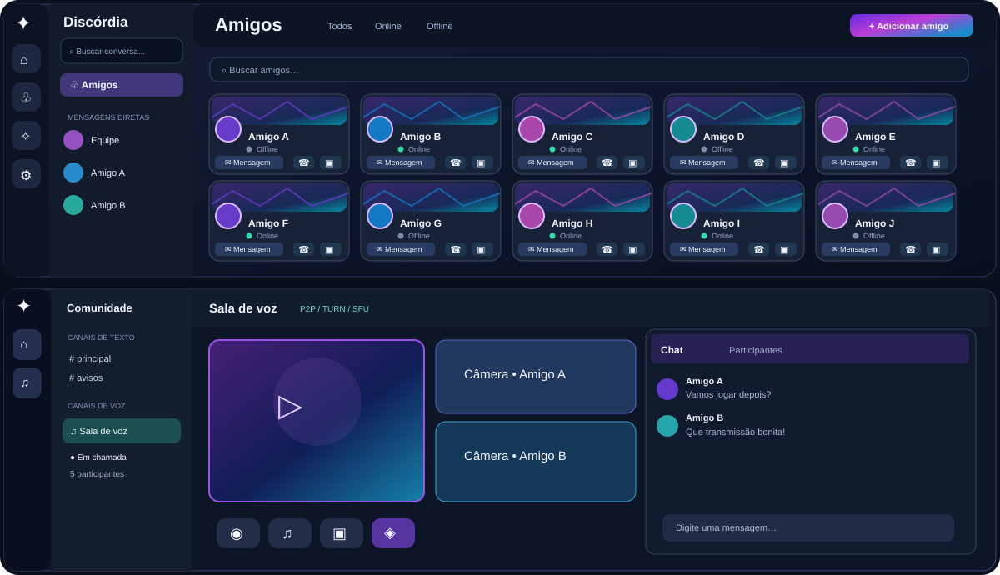

Amigos e mensagens
Encontre seus contatos, acompanhe a presença e escolha entre visualização em cartões ou lista.
Voz, mensagens e transmissão em uma experiência feita para reunir sua comunidade. Personalize seu espaço, compartilhe momentos e mantenha suas conversas por perto.

Representação ilustrativa da experiência. A aparência pode variar conforme o tema e a versão.
Do primeiro “oi” à próxima partida, encontre seus amigos e compartilhe conteúdo com ferramentas reunidas em um só aplicativo.
Encontre seus contatos, acompanhe a presença e escolha entre visualização em cartões ou lista.
Converse por voz, participe de salas e acompanhe câmeras e transmissões em um espaço dedicado.
Escolha uma janela, jogo ou monitor e ajuste áudio e qualidade com as opções SmartStream.
Adapte a aparência do Discórdia e crie combinações próprias no Estúdio de Temas.
Organize seus amigos, redimensione painéis e mantenha os comandos importantes à mão. Os temas alteram a identidade visual sem mudar as funções principais.
Perfil, presença, microfone, áudio e chamadas em uma área compacta.
Personalize cores e elementos visuais em um ambiente separado das configurações cotidianas.
Alterne entre lista e cartões de amigos; organize as colunas de acordo com sua tela.
O Discórdia combina conexão direta e alternativas de rede para adaptar a comunicação ao contexto de cada chamada. A rota utilizada depende das condições de conexão e dos recursos disponíveis.
Baixe diretamente do repositório oficial. A versão Release Candidate está disponível para quem deseja experimentar os recursos antes do lançamento estável.
Pré-lançamento para Windows x64, destinado à avaliação dos novos recursos e refinamentos da experiência.
Consultando versão oficial…Arquivos da Release oficial; verifique as notas de versão e as somas SHA-256.Canal planejado para a versão final, após a conclusão das verificações necessárias.
Ainda não disponívelAs versões estáveis serão identificadas separadamente das RCs.Saiba mais sobre instalação, versões e privacidade.
O Discórdia Desktop é distribuído para Windows x64. Os requisitos podem variar conforme a captura de tela, a câmera e os recursos em uso.
O instalador adiciona o aplicativo ao computador; a edição portátil pode ser executada sem instalação tradicional. Confira as instruções da Release antes de utilizar.
É uma prévia próxima da versão final, ainda sujeita a alterações. A edição estável 1.0 será anunciada separadamente.
Baixe pelos links deste site ou pelo GitHub Releases do projeto e compare o hash SHA-256 publicado. O Windows pode exibir aviso de editor não verificado em versões sem assinatura digital.
Consulte a página de privacidade antes de usar o serviço.
Descubra as novidades e acompanhe os próximos lançamentos pelos canais oficiais do projeto.